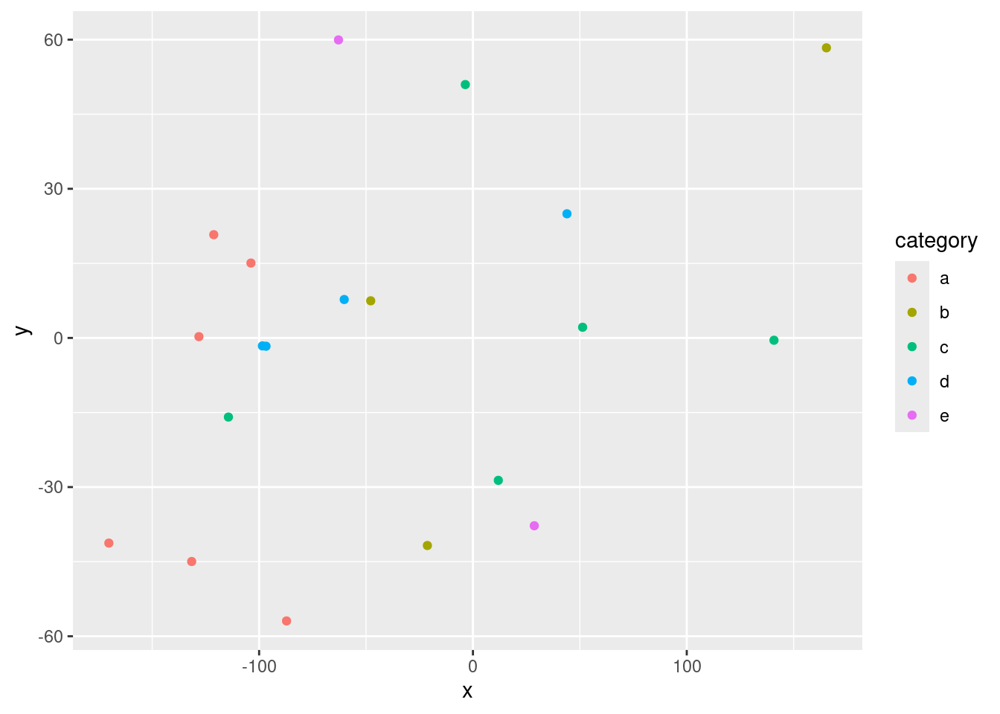

x=3+4Exploring Osprey Occurrences and Migration Trends in the US Using Flickr Photos and eBird Data
GEO511
install.packages(“rmarkdown”) library(rmarkdown) library(knitr)
Introduction
The Osprey (Pandion haliaetus) is a migratory bird species with a broad distribution across North America. This project will explore seasonal trends in Osprey occurrences across the United States by comparing the geographic distribution and timing of sightings in Flickr photos with data from eBird. The primary goal is to assess whether trends in the presence and migration patterns of Ospreys, as seen in Flickr images, match the migration data reported in eBird. By doing so, the project seeks to provide insight into the correlation between photo-based citizen science data and formal bird observation databases, as well as to highlight how social media platforms like Flickr can contribute to ecological studies.
Materials and methods
[~ 200 words]
Narrative: Clear narrative description of the data sources and methods. Includes data from at least two sources that were integrated / merged in R.
Code: The code associated with the project is well organized and easy to follow. Demonstrates mastery of R graphics and functions.
Data: The underlying data are publicly accessible via the web and downloaded/accessed within the Rmd script. If you want to use your own data, you must make it available on a website (e.g. Figshare) so that others are able to re-run your code.
You can do bullets like this:
- The first most important thing
- The second most important thing
- The third most important thing
You can do numbers like this:
- The first most important thing
- The second most important thing
- The third most important thing
See http://rmarkdown.rstudio.com/ for all the amazing things you can do.
Here’s my first code chunk.
Refer to output in your narrative like this: x=7 .
Load any required packages in a code chunk (you may need to install some packages):
install.packages("tidyverse")The following package(s) will be installed:
- tidyverse [2.0.0]
These packages will be installed into "~/work/final-project-Festuus/final-project-Festuus/renv/library/linux-ubuntu-jammy/R-4.4/x86_64-pc-linux-gnu".
# Installing packages --------------------------------------------------------
- Installing tidyverse ... OK [linked from cache]
Successfully installed 1 package in 6.9 milliseconds.install.packages("kableExtra")The following package(s) will be installed:
- kableExtra [1.4.0]
These packages will be installed into "~/work/final-project-Festuus/final-project-Festuus/renv/library/linux-ubuntu-jammy/R-4.4/x86_64-pc-linux-gnu".
# Installing packages --------------------------------------------------------
- Installing kableExtra ... OK [linked from cache]
Successfully installed 1 package in 6 milliseconds.install.packages("htmlwidgets")The following package(s) will be installed:
- htmlwidgets [1.6.4]
These packages will be installed into "~/work/final-project-Festuus/final-project-Festuus/renv/library/linux-ubuntu-jammy/R-4.4/x86_64-pc-linux-gnu".
# Installing packages --------------------------------------------------------
- Installing htmlwidgets ... OK [linked from cache]
Successfully installed 1 package in 6.2 milliseconds.install.packages("widgetframe")The following package(s) will be installed:
- widgetframe [0.3.1]
These packages will be installed into "~/work/final-project-Festuus/final-project-Festuus/renv/library/linux-ubuntu-jammy/R-4.4/x86_64-pc-linux-gnu".
# Installing packages --------------------------------------------------------
- Installing widgetframe ... OK [linked from cache]
Successfully installed 1 package in 6.2 milliseconds.library(tidyverse)
library(kableExtra)
library(htmlwidgets)
library(widgetframe)
knitr::opts_chunk$set(widgetframe_widgets_dir = 'widgets' )
knitr::opts_chunk$set(cache=TRUE) # cache the results for quick compilingDownload and clean all required data
n=20
data=data.frame(x=runif(n,-180,180),
y=runif(n,-60,60),
size = runif(n, 5, 20),
category = factor(
sample(letters[1:5], n, replace = TRUE)
),
value = rnorm(n))data %>%
slice(1:10) %>% #show only 1:n rows
kable(digits=2,align="c")%>% #make table and round to two digits
kable_styling(bootstrap_options =
c("striped", "hover", "condensed", "responsive")) #apply other formatting| x | y | size | category | value |
|---|---|---|---|---|
| -121.21 | 20.77 | 18.01 | a | -0.38 |
| -60.20 | 7.73 | 18.96 | d | -1.02 |
| -98.45 | -1.60 | 11.36 | d | 0.23 |
| 165.32 | 58.35 | 7.92 | b | -0.12 |
| -62.88 | 59.94 | 17.39 | e | 0.04 |
| -3.56 | 50.96 | 15.00 | c | -0.25 |
| 28.68 | -37.78 | 6.84 | e | 0.31 |
| -96.77 | -1.67 | 5.97 | d | -0.33 |
| -103.83 | 15.06 | 11.45 | a | 1.19 |
| -128.15 | 0.26 | 11.78 | a | 0.81 |
Add any additional processing steps here.
Results
[~200 words]
Tables and figures (maps and other graphics) are carefully planned to convey the results of your analysis. Intense exploration and evidence of many trials and failures. The author looked at the data in many different ways before coming to the final presentation of the data.
Show tables, plots, etc. and describe them.
data %>%
ggplot(aes(x=x,y=y,col=category))+
geom_point()
Dygraphs Example
Conclusions
[~200 words]
Clear summary adequately describing the results and putting them in context. Discussion of further questions and ways to continue investigation.
References
All sources are cited in a consistent manner